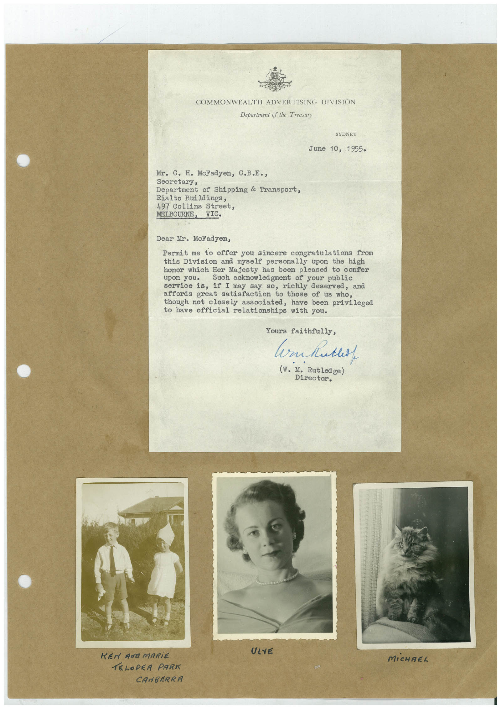

Book 1 · scan 134


Description
Transcription
Context
Review notes
Compare the machine draft with the scan. Handwriting and names need human review.
Artifacts
Edit the artifacts field in this note’s frontmatter to change these records. This summary is generated.
B01-S134-A01 — Letter, Photo & Handwritten note — Book 1, scan 134
Types: Typed document, Letter, Photo, Handwritten note
Scope: Whole scanned page; individual items can be split out during review.
Caption: Not mapped yet.
Caption source: Not recorded yet.
Caption status: unmapped
Machine transcription
COMMONWEALTH ADVERTISING DIVISION Department of the Treasury SYDNEY June 10, 1955. Mr. C. H. McFadyen, C.B.E•, Secretary, Department of Shipping & Transport, Rialto Buildings, 497 Collins Street, Dear Mr. McFadyen, Permit me to offer you sincere congratulations from this Division and myself personally upon the high honor which Her Majesty has been pleased to confer Such acknowledgment of your public service is, if I may say so, richly deserved, and affords great satisfaction to those of us who, though not closely associated, have been privileged to have official relationships with you. Yours faithfully, (W. M. Rutledge) Director. ULYE KEN AND MARIE TELOPER PARK CANBERRA MiCHAEL